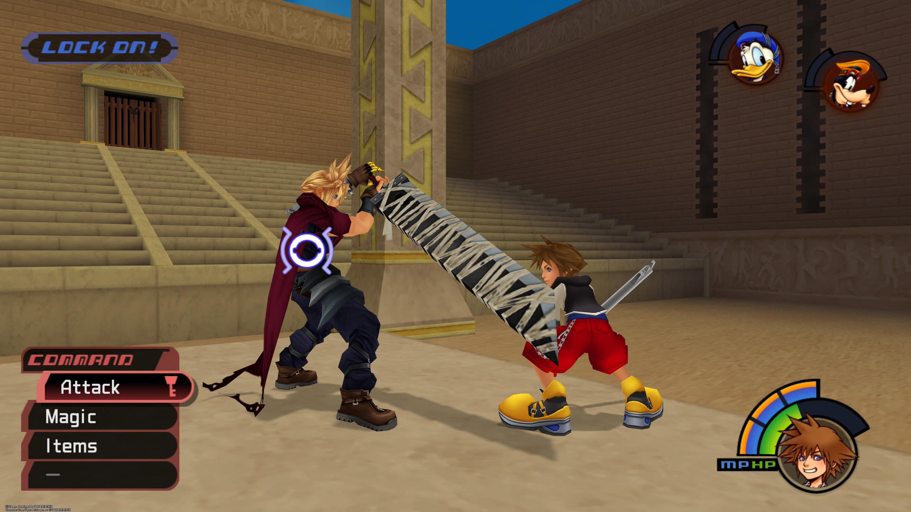
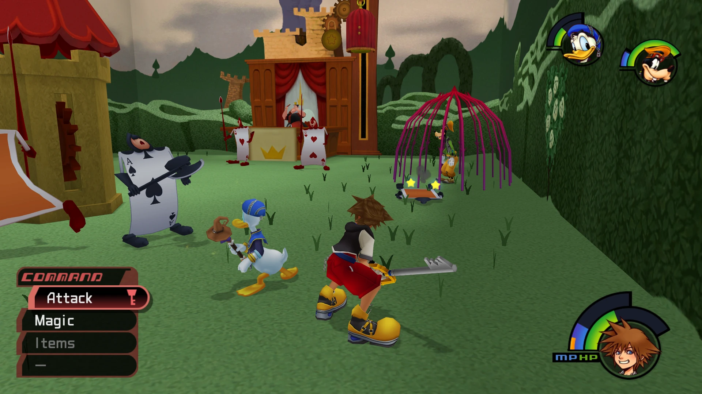
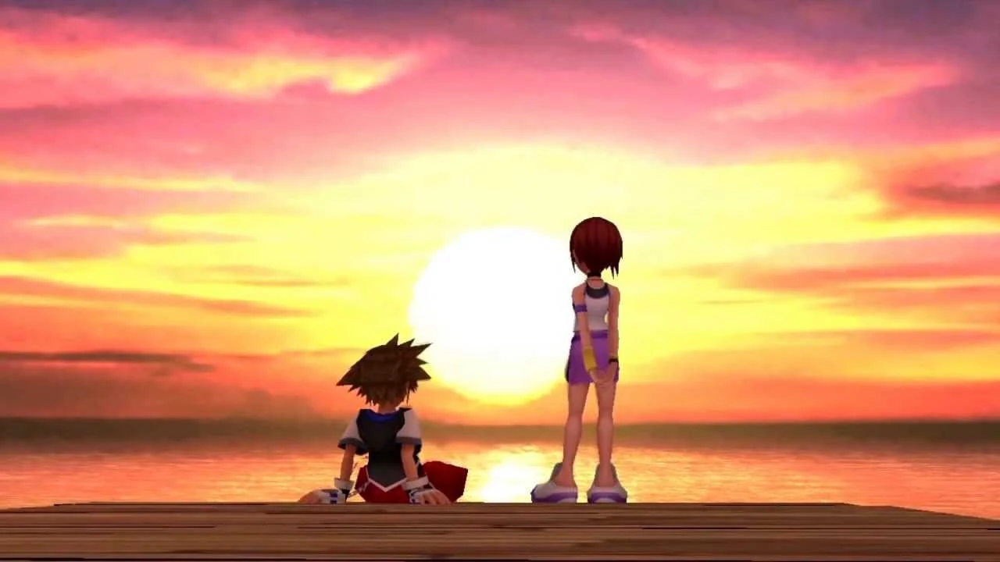

The game combines characters and settings from Disney animated features with those from Square's Final Fantasy series, in addition to original characters and worlds created for the game. It follows the adventures of Sora, a cheerful teenager who fights against the forces of darkness alongside his allies, including Donald Duck, Goofy and other Disney characters. The game was a departure from Square's standard role-playing games, introducing a substantial action and hack and slash element to the gameplay. The score was composed by Yoko Shimomura. Kingdom Hearts has an all-star voice cast and includes many of the Disney characters' official voice actors. It was longtime Square character designer Tetsuya Nomura's first time in a directorial position.
Kingdom Hearts received critical and commercial success and was praised for its unusual combination of action and role-playing elements, its unexpectedly harmonious mix of Square and Disney elements, and Shimomura's music. It was a large presence in the 2002 holiday season, receiving numerous year-end game awards, and went on to achieve Sony "Greatest Hits" status. The game's success spawned a franchise and numerous sequels, with the Kingdom Hearts series going on to ship over 36 million copies worldwide and becoming one of Square's most popular franchises. Kingdom Hearts is the tenth best-selling PlayStation 2 game of all time, and is considered to be one of the greatest video games of all time.
The initial idea for Kingdom Hearts began with a discussion between Shinji Hashimoto and Hironobu Sakaguchi about Super Mario 64. They were planning to make a game with freedom of movement in three dimensions like Super Mario 64 but lamented that only characters as popular as Disney's could rival a Mario game. Tetsuya Nomura, overhearing their conversation, volunteered to lead the project and the two producers agreed to let him direct. A chance meeting between Hashimoto and a Disney executive in an elevator—Square and Disney having previously worked in the same building in Japan—allowed Hashimoto to pitch the idea directly to Disney. Nomura struck down a number of proposals from Disney in order to pursue his own concept featuring an original character not based on a Disney property. The production team consisted of over one hundred members from both Square and Disney Interactive. The game began development in February 2000 and originally focused more on the gameplay with a simple story to appeal to Disney's target age range. After executive producer Hironobu Sakaguchi told director Tetsuya Nomura the game would be a failure if it did not aim for the same level as the Final Fantasy series, Nomura began to develop the story further. When choosing the Disney worlds to include in the game, Nomura and his team tried to pick worlds that had distinctively different looks. They also tried to take into account worlds with Disney characters that would be interesting.[40] Thanks to support from Disney's then-president and current chairman and chief executive Bob Iger, the team had few restrictions on which worlds they could use from the Disney franchises. However, they tried to remain within each character's boundaries set by their respective Disney films. In a June 2013 interview, Nomura stated the name of the game was inspired by Disney Theme Parks, particularly Animal Kingdom, which had recently opened when development on the game began. However, Nomura could not secure the IP as just Kingdom. Later on, when the development team began to think about "hearts" as a core part of the story, it was decided to combine the two to form the title Kingdom Hearts. Outside contractors Telecom Animation Film Company, and Kazuhide Tomonaga helped animate the game by being the animation supervisors.
Additional content was added to the North American release that was absent in the initial Japanese release: new optional bosses, one of which, Kurt Zisa, was named after the winner of the official website's "Name-In-Game" sweepstakes, an extra difficulty level, and a teaser of Kingdom Hearts II accessible by meeting certain criteria. Nomura included the teaser in order to gauge fan reaction to the possibility of a sequel; he felt that if the idea was unpopular, then it would be best to leave certain events in the game unexplained. The new content was later added to the Japanese re-release Kingdom Hearts Final Mix. Final Mix included further additional content such as new items, cutscenes, and enemies, such as a new secret boss that sets up the sequel. The new content further hinted at plotlines that would be explained in sequels. Some content omitted from Kingdom Hearts was later added into Kingdom Hearts II. A world based on The Lion King, for instance, was unfeasible because an additional program was required to process movement on four legs—a necessity since Sora would become a lion in that world. Due to time constraints, the developers left out an optional boss battle, similar to the Sephiroth battle, against Tifa Lockhart. She was later included in Kingdom Hearts II as a more developed character.
Yoko Shimomura
Yoko Shimomura composed and produced the music of Kingdom Hearts. While there are arranged melodies derived from previous Disney films, most of the soundtrack consists of original themes written specifically for the game by Shimomura. The opening orchestration and ending credits theme were arranged and orchestrated by Kaoru Wada and performed by the New Japan Philharmonic Orchestra. The main vocal theme for the original Japanese release is titled "Hikari" (光). The English version of "Hikari," "Simple and Clean," was used in the Western releases and the Japanese re-release, Final Mix.
Uematsu then decided that the higher-quality audio was not worth the trade-off with performance, and opted instead to use MIDI-like sounds produced by the console's internal sound sequencer, similar to how his soundtracks for the previous games in the series on the Super NES were implemented. While the Super NES only had eight sound channels to work with, the PlayStation had twenty-four. Eight were reserved for sound effects, leaving sixteen available for the music. Uematsu's approach to composing the game's music was to treat it like a film soundtrack and compose music that reflected the mood of the scenes, rather than trying to make strong melodies to "define the game", as he felt that approach would come across too strong when placed alongside the game's new 3D visuals. As an example, he composed the track intended for the scene in the game where Aerith Gainsborough is killed to be "sad but beautiful", rather than more overtly emotional, creating what he felt was a more understated feeling. Uematsu additionally said that the soundtrack had a feel of "realism", which also prevented him from using "exorbitant, crazy music".
Both versions were composed and performed by Hikaru Utada. Her involvement, along with the Japanese song title, was announced in January 2002. Utada was the only singer Nomura had in mind for the Kingdom Hearts theme song. This marked the first time Utada had produced a song for a video game. The single, "Hikari," was released in Japan on March 20, 2002 and proved to be very popular; by August 2002, it had sold over 860,000 copies in Japan. The Kingdom Hearts soundtrack was released on a two CD set on March 27, 2002, in Japan and a year later in the United States. The soundtrack was later included in the Kingdom Hearts Original Soundtrack Complete, which was released in Japan on March 28, 2007. Music from Kingdom Hearts was also included in Shimomura's best works compilation album Drammatica.
Kingdom Hearts featured well-known voice actors for both the Japanese and English versions. The Japanese version featured Miyu Irino as Sora, Risa Uchida as Kairi, and Mamoru Miyano as Riku. Other voice actors included Kōichi Yamadera, Hideo Ishikawa, and Maaya Sakamoto. A special effort was made to preserve the official voice actors of characters from the Disney movies used in Kingdom Hearts. Some of the voice actors from the related television series or direct-to-video sequels were chosen over the original voice actors from films, where applicable (e.g. Dan Castellaneta as Genie, rather than Robin Williams). The English version featured Haley Joel Osment as Sora, David Gallagher as Riku, and Hayden Panettiere as Kairi. Other voice actors included Billy Zane as Ansem, Christy Carlson Romano as Yuffie, David Boreanaz as Leon, James Woods as Hades, and Mandy Moore as Aerith.
Kingdom Hearts sold very well. During the first two months of its North American release it was one of the top three highest-selling video games and was among the top selling titles during the 2002 Christmas and holiday season. In November 2002, UBS Warburg listed it as the 6th highest console game in terms of sales during the week of November 5. At the end of April 2003, Square announced that Kingdom Hearts had sold its millionth copy in the United States, which made it eligible for PlayStation's "Greatest Hits" status, and over 3.0 million worldwide. Sales reached 1.2 million in Japan in the first quarter of 2004, and broke 4.0 million worldwide. In December 2005, the NPD Group listed it as "one of the top ten best-selling PlayStation 2 titles of all time in North America." By July 2006, Kingdom Hearts had sold through 2.6 million copies and earned $100 million in the United States alone. Next Generation ranked it as the seventh highest-selling game launched for the PlayStation 2, Xbox or GameCube between January 2000 and July 2006 in that country. As of December 2006, Kingdom Hearts had shipped over 5.6 million copies worldwide with 1.1 million in PAL regions, 1.5 million in Japan, and 3.0 million in North America. As of 2006, the original game and the Final Mix version had sold 6 million copies on PS2. As of March 2022, the Kingdom Hearts series has shipped more than 36 million copies worldwide.